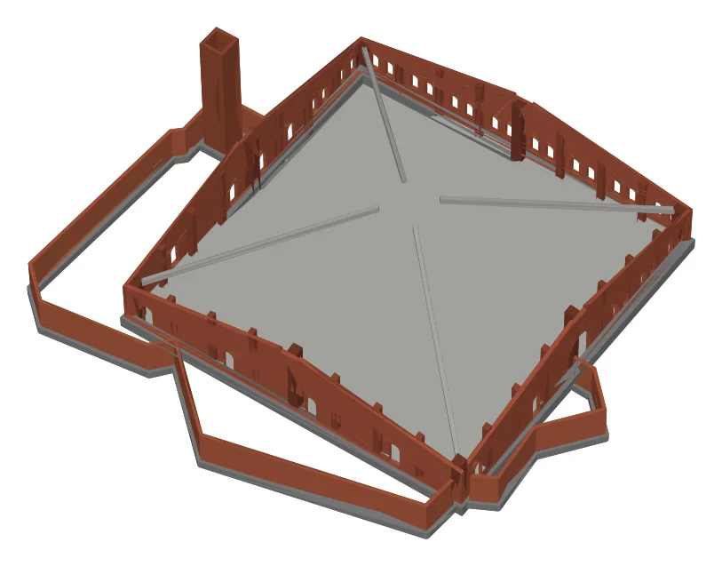

Rilievo e stato di fatto
Piante, prospetti, sezioni e modelli 3D, da rilievo in sito, foto o immagini satellitari.
- Disegni 2D puliti e organizzati per layer
- Modelli 3D e solidi
- Routine AutoLISP per rigenerare il modello
AutoCAD · AutoLISP
Nowkhesht / Modellazione e analisi
Servizi digitaliGli stessi strumenti che vedi nei casi studio di Nowkhesht, applicati al tuo progetto: dai disegni dello stato di fatto all'analisi strutturale, energetica e della luce naturale. Per studenti, studi di ingegneria e architettura, e committenti che vogliono numeri e immagini prima di decidere.
Piante, prospetti, sezioni e modelli 3D, da rilievo in sito, foto o immagini satellitari.
AutoCAD · AutoLISP
Valutazione sismica di edifici in muratura, storici e intelaiati.
ANSYS · Midas Gen · ETABS · SAP2000
Prima di spendere, scopri quale intervento conta davvero.
DesignBuilder · Ladybug / Honeybee · DIALux
Un unico modello con disegni, abachi dei materiali e computi.
Revit
58 solidi separati, ogni elemento strutturale sul proprio layer, pronti per la mesh e l'assegnazione dei materiali in ANSYS. Tutto è stato generato dai disegni dello stato di fatto con una routine AutoLISP: se cambia una dimensione, il modello si ricostruisce in circa un minuto.


Caso studio completo IRIB · Analisi non lineare in ANSYS del campanile di San Giuliano
Invia il progetto, i file che hai e la scadenza.
Tempi, costi e consegne scritti con precisione, prima di iniziare.
Vedi e commenti ogni fase, non solo il risultato finale.
File modificabili, una breve relazione e un incontro di spiegazione.
Scrivi qualche riga sull'edificio o sul tema, sul software che ti serve e sulla scadenza.